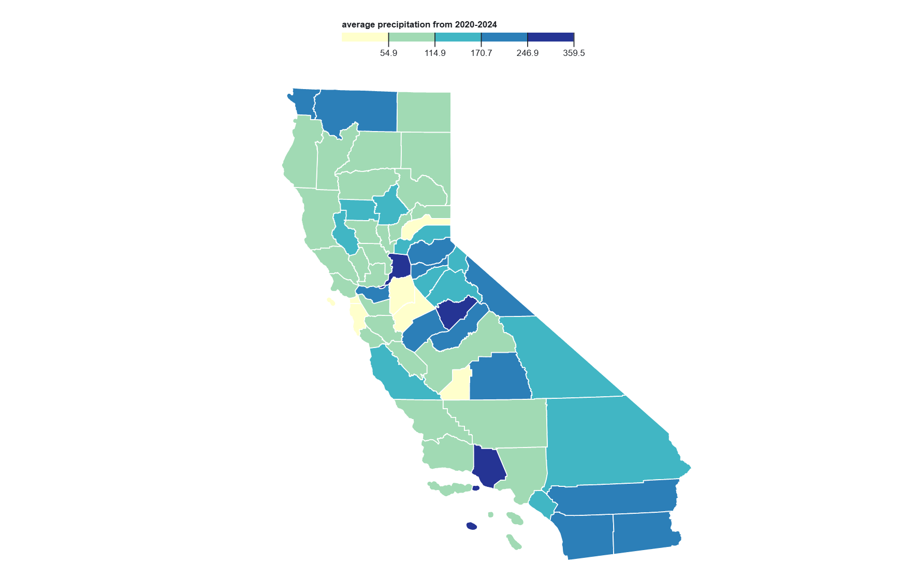
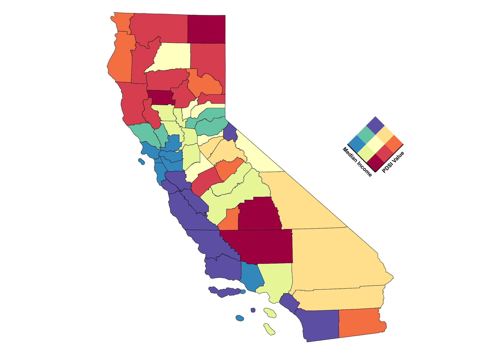
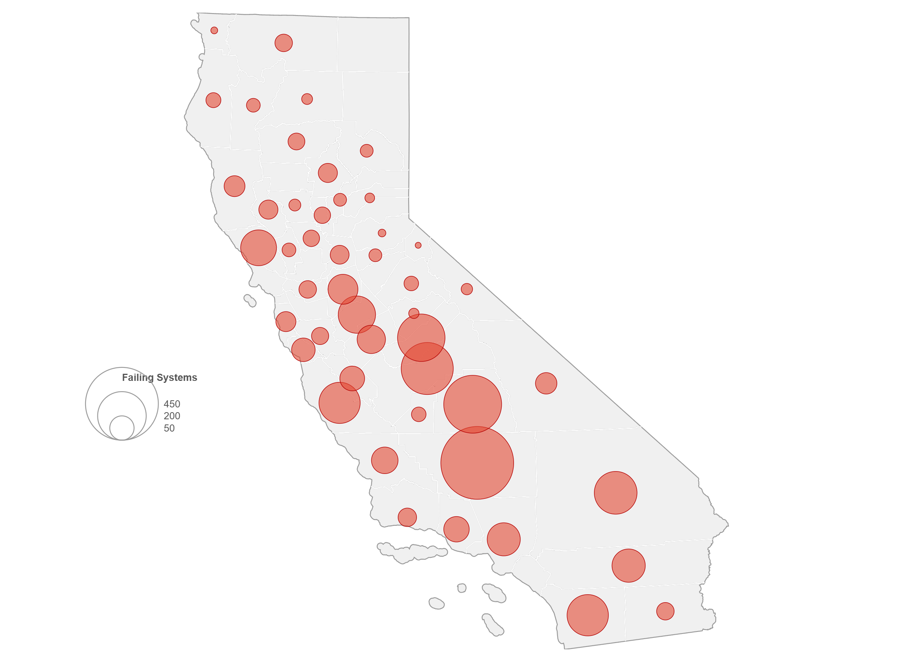

This project explores how prepared California’s regions are for future droughts, even as current drought conditions have temporarily subsided. While short-term climate conditions may suggest relief, the reality is that many communities remain highly vulnerable due to persistent environmental stress, aging infrastructure, and social inequities. Using interactive geovisualization tools, this project examines historic precipitation patterns, highlights regions with high drought exposure and economic vulnerability, and visualizes the geographic distribution of failing water systems. By combining these perspectives, the project reframes the narrative from a reactive “drought crisis” model to a proactive vision of long-term water security. The goal is to provide insight for planners, policymakers, and advocates who are working to build a more equitable and climate-resilient California—where access to safe, reliable water is a right, not a privilege.

This map displays the average annual precipitation across California counties from 2020 to 2024. It clearly shows that coastal and northern regions received significantly more rainfall than interior and southern counties. Some inland areas, especially in the Central Valley and Southern California, experienced notably low precipitation, reinforcing their vulnerability to drought. Meanwhile, parts of Northern California and the Sierra Nevada foothills appear to have higher rainfall, which may help buffer those areas against drought stress. This spatial pattern highlights the uneven distribution of water resources and sets the stage for understanding regional differences in drought vulnerability.

This bivariate map displays the intersection of average drought severity (measured by the Palmer Drought Severity Index) and median household income at the county level for July 2021, one of the driest months California has experienced in decades. The visualization highlights regions where both environmental and economic stress were at their peak, revealing areas that may struggle most with long-term water insecurity. By comparing physical drought risk with socioeconomic vulnerability, this map helps identify communities that face compounding challenges and are most in need of targeted, equitable water policy interventions.

This map visualizes the distribution of failing water systems across California using proportional symbols. Larger circles represent counties with more failing water systems, many of which are located in rural or lower-income areas. These regions often lack the financial resources and infrastructure to maintain safe, reliable access to drinking water. This map highlights how water system failures compound drought vulnerability and environmental injustice, especially in communities already facing structural disadvantage.
Taken together, these three maps offer a layered perspective on California’s long-term water resilience. The precipitation map reveals stark regional differences in rainfall, showing that some counties face persistent environmental stress regardless of temporary drought relief. The bivariate analysis adds a socioeconomic lens, highlighting communities that are not only drought-prone but also economically vulnerable, where the capacity to adapt or invest in water security is limited. Finally, the map of failing water systems draws attention to the structural breakdowns in access to safe drinking water, disproportionately affecting marginalized and rural areas. These visualizations underscore that water insecurity in California is not just a climate issue—it is deeply tied to infrastructure, income, and environmental justice. Together, they make the case for more targeted, equitable, and data-informed water policy planning across the state.